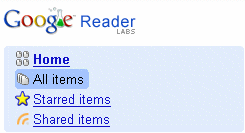
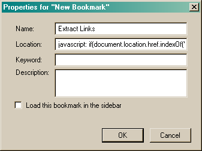

Google Reader Link Extractor
I recently converted from using Bloglines to Google Reader, and one of the problems that I was running into was that my starred item list was growing far too large. I needed to find a way to archive the articles to my delicious account. This link extractor allows me to do just that and more.
How it works
Just visit the section with the stories that you wish to archive.

This can be your starred items list, your shared items list, or any section in google reader with a list of articles. Next, make sure that they all have appeared on the list(scroll down a lot) and click the bookmarklet. A new page opens with a bookmark file.
Save the source code to your harddrive and then import it into delicious or your browsers bookmarks.
Note, the tag GoogleReader is added to any links you import into delicious.
Install it!
This bookmarklet only works in firefox. Install it if you don't have it already. Right click your bookmark toolbar and add a new link. Name it whatever you want and place the following text in the location field.
Drag this bookmarklet to your bookmarks toolbar. Export Links

Bugs & Contact
Check back here if the bookmarklet is no longer working. It uses xpath expressions to query for information and if google decides to change the html then the code is liable to stop working. You can contact me at peter at 1st-soft.net.
License
Google Reader Link Extractor was written by Peter Shafer, student developer, in May 2007. Contact: peter at 1st-soft.net

This software is licensed under the CC-GNU GPL.